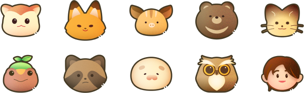

도심 한복판에서 즐기는
색다른 공간으로의 여행
몰입감을 높여주는 귀여운 일러스트들과 함께 순식간에 테미와유의 세계관으로 뛰어들 수 있습니다.
디자인과 메타버스 기술을 결합한
위드코로나 대전관광 디자인 솔루션
테미와유란?
동물 캐릭터들과 친구처럼 톡으로 대화하며 구 충남도지사 관사촌 테미오래를 관광하는 현실강화형 메타버스 앱입니다.
시민들은 대전시의 관광지인 구 충남도지사 관사촌 ‘테미오래’에서 대전, 충남의 멸종위기 동물친구들을 위한 일일 우체부가 됩니다. 사람들은 편지를 배달하고 동물들의 고민을 해결해주며 각 관사를 관람합니다.
분류
기여도
작업 기간
사용 프로그램
Discover & Define
문제를 규정하다
'테미오래'라는 숨겨진 관광 자원을 이용하여 대전시의 관광 문제를 해결하자
우리 팀은 노잼도시라는 악명 높은 별명을 가지고 있는 대전시의 고질적인 관광 문제에 초점을 맞추기로 했습니다. 그러나 기존에 존재하는 관광 가이드 앱의 형태로는 한계가 있다고 생각하여 기존의 것들과 다른 형태로 관광지에 대한 어필을 할 수 있는 앱이 필요하다고 생각했습니다.
그와 동시에 데스크 리서치, 탐방, 에스노그라피 등 직/간접 리서치를 통해 옛 충남도지사관사촌인 '테미오래'라는 관광지가 홍보 부족과 콘텐츠 전달력의 미흡함 등의 이유로 인해 외지에서 대전을 방문하는 관광객은 물론 대전 시민들의 관심조차 받지 못하고 있다는 사실을 파악하고, 이 두 문제를 하나의 선상에 놓고 해결방안을 찾아보기로 하였습니다.
타겟과 서비스 방향을 설정하다
소비의 주체로서 새롭게 떠오르고 있는 MZ세대를 주목하자
우리 팀은 소비의 주체로서 새롭게 떠오르고 있는 MZ세대, 그중에서도 특히 Z세대에 초점을 맞추기로 했습니다. 디지털 문명의 네이티브이며 자신이 경험하는 것을 사진으로 남기기를 좋아하고 그것을 남들과 공유하는 것을 좋아하는 성향에 주목했습니다. 이들을 사로잡으면 곧 바이럴 마케팅으로도 이어질 수 있기때문에 필수적으로 잡아야할 사용자층이라고 생각했습니다.
MZ세대와의 심층 인터뷰를 통해 콘텐츠에 대한 호불호, 소비 성향, 여행 성향 등의 정보를 수집하고 카드 소팅 등을 이용해 정리하였으며 MZ세대 사용자 퍼소나와 고객 여정 지도를 작성하였습니다.
이러한 과정을 통해 서비스의 방향을 다듬어나갔습니다.
Develope & Deliver
아이디어를 발산하다
도출된 인사이트를 기반으로, 콘텐츠와 서비스에 대한 아이디어를 발산하자
우리 팀은 앞서 실행한 리서치들에서 얻은 인사이트를 기반으로 문제를 해결할 방법들에 대해 여러 방법으로 아이데이션을 했습니다. 작은 의견 하나도 놓치지 않기 위해 노력하였으며, 터치 포인트와 채널을 고려하며 사용자가 서비스를 이용하는 형태를 염두에 두고 정리했습니다. 또한 서비스를 제공할 때의 테크놀로지 솔루션에 대한 탐구도 함께 하여 더 실감나고 섬세한 서비스를 설계하고 제공할 수 있도록 하였습니다.
서비스를 완성하다
사용자가 체험을 해볼 수 있는 형태로 만들어 보자
지금까지 정리된 솔루션을 시각화하고 다듬어 가장 마지막에 사용자에게 전달되는 형태로 바꾸었습니다. 시각적인 요소는 가장 먼저 사용자들의 흥미를 이끌고 마음을 사로잡을 수 있는 통로이기에 더욱 중요하다고 판단했습니다. 다양한 디자인 시안을 고안하고 추려가며 작업하였습니다.
프로토타입과 튜토리얼을 제작하여 사용자들이 제한적이나마 서비스를 체험해볼 수 있도록 하였습니다.
대전충남의 지역성과 개성을
갖춘 동물 캐릭터
우리는 타겟 리서치를 통해 MZ세대는 가치 소비를 하는 경향이 있으며 환경 이슈에 관심이 많고 역사 콘텐츠에 대한 관심도는 낮다는 것을 알아내고 그에 맞춰 콘텐츠를 개발하기 시작했습니다.
일제시대 해수구제사업부터 오늘날의 환경 문제에 이르기까지, 동물들의 멸종과 수난사에 대한 이야기를 풀어냈습니다. 또한 계룡산의 의로운 호랑이 이야기, 충남 보령시 스무티 고개의 춤추는 여우들 이야기 등 구전 민속문학, 대전의 깃대종 하늘다람쥐와 이끼도롱뇽 등 폭넓은 조사를 거쳤습니다.
이 자료들을 바탕으로 캐릭터 퍼소나를 만들었고, 그렇게 대전충남의 지역성과 개성을 갖춘 동물 캐릭터들을 만든 후 테크놀로지 솔루션으로 동물들에게 생동감을 부여했습니다.
현실강화형 메타버스 콘텐츠
'테미와유'
건물에 사는 동물이 톡으로 말을 걸어오면서 경험이 시작되어, 플레이어가 동물 캐릭터들이 현실 속에 살아있다는 느낌을 받고 그들의 삶을 들여다보는 것처럼 실감나고 생동감 넘치는 경험을 할 수 있도록 디자인하였습니다. 미션을 수행하고 집안에 있는 동물 친구의 모형 앞에 다가서면 우편물 배달이 완료되며 도장을 얻게 됩니다.
전시 콘텐츠에 대한 안내도 받을 수 있습니다. 정해진 순서가 필요없이 관광객이 자유롭게 이동하는 대로 이에 맞춰 안내가 이뤄집니다. 근거리 통신 기술 비콘을 이용하여 이를 가능하게 만들었습니다. 위드코로나 시대에 대면안내가 없더라도 관광하는 동안 외롭지 않으며, 즐겁고 안전한 관광이 가능합니다.
또한 테미오래에서의 관람이 끝난 후에도 귀가하여서도 테미와유의 여운을 즐길수 있도록 시나리오를 설계하여, 물리적 공간에서 경험이 끝나는 것이 아니라 메타버스 공간으로 공간과 경험이 확장되어 이어질 수 있도록 하였습니다.
도심 한복판에서 즐기는
색다른 공간으로의 여행
몰입감을 높여주는 귀여운 일러스트들과 함께 순식간에 테미와유의 세계관으로 뛰어들 수 있습니다.
동물 친구들과
친구 되어보기
구 충남도지사 관사 테미오래에서 동물 친구들과 톡으로 함께 대화하고 우정을 쌓으며
우리를 둘러싼 환경에 대해 다시 생각해보는 시간을 가져볼 수 있습니다.
점박이물범 어리는 왜 우울해하고 있을까요?
여우촌장과 호랑이에 얽힌 비밀은?
테미오래의 일일우체부가 되어 역사적 건축물들을 누비며 지금 알아보세요.
우리 주변에는 어떤 동물들이 살고 있을까요?
테미와유를 통해 대전의 깃대종인 하늘다람쥐, 이끼 도롱뇽, 충남의 멸종위기종에 대해 알아보세요.
테미톡에서 동물친구의 프로필을 누르면 언제든 해당 친구의 서식지, 특징 등의 정보를 알 수 있습니다.
친절한 지도 기능
플레이어가 현재 있는 위치를 확인할 수 있고 각 건물에 살고 있는 동물 친구들의 정보를 알 수 있어요.
건물을 누르면 건축물의 건축과 역사 이야기를 볼 수 있고, 해당 건물에서 수행할 수 있는 임무들을 확인할 수도 있어요.
빼놓을 수 없는
임무와 보상 체계
대전과 충청도의 동물들이 들려주는 역사,
문화, 자연 환경 등의 이야기들을 즐기다 보면 어느새 임무 완료! 메인 임무와 서브 임무들을 완료하고 도장을 받으세요.
도장을 모으면 테미와유 친구들이 준비한 선물들을 받을 수 있어요.
충청도에서 나는 농산품으로 만들어진 메뉴들이 준비되어있는 카페 꼬랑지의 할인쿠폰, 귀여운 테미와유 친구들이 들어가있는 기념품 교환 쿠폰, 테미와유 친구들이 기다리고 있는 메타버스 플랫폼 로블록스의 로벅스 교환 쿠폰 등 다양한 선물들이 준비되어 있어요.
튜토리얼 키오스크
앱을 처음 접하는 사용자가 직접 체험하면서 앱에 대한 정보를 얻고 사용법을 숙지할 수 있도록 간략한 튜토리얼 키오스크 프로그램 프로토타입을 제작했습니다. 해당 프로그램은 프로토파이를 이용해 제작했던 것으로, 전시 당시에는 태블릿 PC에 삽입하여 관람자가 직접 조작해볼 수 있도록 하였습니다.
설계 포인트
사용자들이 이미 체득하고 있는 방식을 이용하여, 어려움 없이 새로운 콘텐츠를 즐길수 있도록 만들고 싶었습니다. 경험의 시작이 현장에서 이루어지는 만큼 무언가를 배우고 익숙해지는 데에 드는 시간과 번거로움, 거부감을 줄이고, 바로 설계된 서비스를 경험할 수 있도록 하기 위해 노력했습니다.
동시에 새로운 경험을 전달할 수 있도록 테미와유의 세계관을 대전 · 충청도에 서식하고 있는 동물들로 만든 캐릭터, 아이콘, UI 컴포넌트 등 아기자기한 그래픽 디자인 요소들을 이용하여 표현하였습니다.
현장 답사와 사용자 리서치를 통하여 테미오래라는 장소의 의의를 해치지 않으면서도 어울릴 수 있는 콘텐츠가 무엇인지 고민했습니다. 사용자들이 원하는 것이 무엇인지, 새로이 소비의 주체로 떠오른 MZ세대가 어떠한 것에 흥미를 크게 느끼며 어느 것에 대한 수요도가 낮은지 조사하여 주제를 정하고 유저 퍼소나를 만들어 서비스에 대해 구체화하고 섬세하게 디벨롭했습니다.
게임을 플레이하면서 대전에서 우리와 함께 더불어 살아가고 있는 동물들과 함께 대전과 충청도의 역사, 풍속 이야기는 물론 환경 이야기까지 지루하지 않게 습득할 수 있도록 시나리오를 만들었으며 계속해서 호기심을 자극할 수 있도록 경험을 디자인하였습니다.
디자인 포인트
메인 화면은 스마트폰 UI을 떠올릴 수 있도록 디자인하여 첫 사용 시 발생하는 혼란스러움을 줄였고, 게임을 플레이하는 데 꼭 필요한 정보들은 위젯화하여 세부 메뉴로 들어가는 수고 없이 메인 화면에서 확인할 수 있도록 했습니다. 동물 캐릭터들과 톡을 주고 받으며 진행되는 게임이기때문에, 메신저를 디자인하고 그를 구성하는 컴포넌트들의 조형을 이용하여 디자인했습니다. 톡을 주고받는 와중에는 피로함을 최소한으로 하기 위해 가독성이 좋은 형태를 고안했습니다.
개성적인 느낌을 주기 위해 두꺼운 아웃라인을 이용하여 카툰과 같은 느낌을 살렸습니다. 디자인에 통일성을 주기 위해 두꺼운 라인을 사용하여 아이콘, 캐릭터 이미지 등 그래픽 요소 전반을 제작하였습니다. 단조로운 UI에서 오는 지루함을 없애고 게임을 즐기고 있다는 느낌을 확실히 전달하기 위해 조형과 색상을 다양하게 사용하여 아기자기함을 더했습니다. 이용시의 인터랙션 또한 아이콘, 일러스트들이 팝업되며 표시되는 등 활기차면서도 아기자기한 효과를 주어 사용자들이 더욱 몰입할 수 있도록 만들었습니다.
도심 속의 숲이라고도 불리는 구 충청남도지사공관의 특징을 나타낼 수 있도록 초록색 계열과 갈색 계열의 색상을 사용하여 숲이 주는 상쾌함과 안정감을 동시에 표현하였습니다.
색상
폰트
UI 컴포넌트

로고
동물 캐릭터들과 메신저로 대화를 주고받으며 진행되는 게임이기때문에 톡UI의 대화상자를 본따 한글 로고를 만들었습니다. 또한 동물 캐릭터들이 말을 걸어온다는 게임의 진행 방식을 직관적으로 형상화하여 메인 어플 로고를 만들었습니다. '와'는 테미와유의 캐릭터들이 플레이어에게 어서 오라고 말을 걸며 초대하는 느낌을 주며 와글와글하고 즐거운 동물 마을의 분위기도 전달합니다.
아이콘 & 아바타 아이콘
카툰의 느낌을 내기 위해 두꺼운 선을 사용한 UI, 캐릭터 일러스트 등 그래픽 디자인 요소와 어울리도록 제작하였습니다. 앱의 톤 앤 매너를 한층 구체화하여 제시하며 사용자에게는 더 깊어진 몰입감을 선사합니다.

대전의 깃대종인 하늘다람쥐와 이끼도롱뇽을 비롯하여 충청도에 서식하는 동물들을 캐릭터화했습니다. 좌로부터 반달가슴곰 우리, 여우 여울, 아기 멧돼지 꼬지, 점박이물범 어리, 하늘다람쥐 테로미, 이끼도롱뇽 도롱이, 너구리 망구리, 수리부엉이 부보, 담비 라비.
동물마다 페르소나를 만들어 캐릭터성을 부여하고 시나리오를 만들었습니다. 플레이어가 가장 먼저 만나게 되는 테미와유의 우체부, 하늘다람쥐 테로미는 부지런하며 이야기하는 것을 좋아하고 처음 보는 사람과도 쉽게 친해집니다. 밤라떼를 좋아하며 친한 친구인 다람쥐가 졸라대는 바람에 다람쥐에게 나는 법을 가르쳐주고 있습니다. 플레이어가 어려움을 만났을때 테로미에게 질문을 하면 친절하게 답해줍니다.


다른 포트폴리오들도 둘러보세요 !